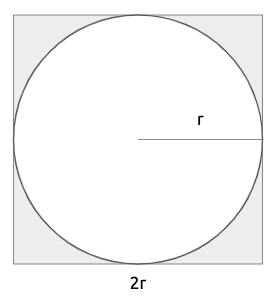
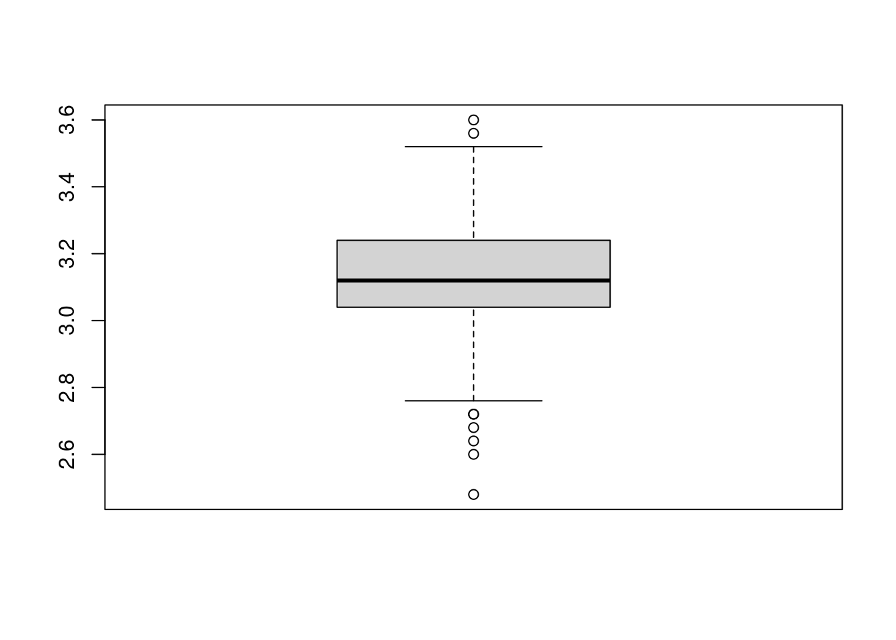

5.3 Steps of Monte Carlo simulation
Monte Carlo methods vary, but tend to follow a particular pattern:
Define a domain of possible inputs
Generate inputs randomly from a probability distribution over the domain
Perform a deterministic computation on the inputs
Aggregate the results
To better understand how Monte Carlo simulation works we will develop a classic experiment: The \(\pi\) number estimation.
\(\pi\) is the mathematical constant, which is equal to 3.14159265…, defined as the ratio of a circle’s circumference to its diameter. It has been calculated in hundreds of different ways over the years. Today, with computational advances, a very useful way is through Monte Carlo Simulation.
Consider a circle with radius \(r\), which is fixed and known.

Imagine that this circle is circumscribed within a square, which therefore has side \(2r\) (also equal to the diameter).

What is the probability that if I choose a random point inside the square, it will also be inside the circle? If I choose any random point within the square, it can be inside the circle or just inside the square. A very simple way to compute this probability is the ratio between the area of the circle and the area of the square.
\[ P(point\ inside\ the\ circle) = \frac{area\ of\ the\ circle}{area\ of\ the\ square}=\frac{\pi r^2}{2r\times 2r}=\frac{\pi}{4} \]
The probability that a random selected point in the square is in the circle is \(\pi/4\). This means that if I were to replicate the selection of a random point in the square a large number of times, I could count the proportion of points inside the circle, multiply it by four and that would give me an approximation of \(\pi\).
We will create a Monte Carlo experiment in R which implements the ideas above. We will carry out the experiment in 5 steps:
Generate 2 random numbers between -1 and 1 in total 100 times (\(x\) and \(y\)).
Calculate \(x^2 + y^2\) (This is the circumference equation).
- If the value is less than 1, the case will be inside the circle
- If the value is greater than 1, the case will be outside the circle.
Calculate the proportion of points inside the circle and multiply it by four to approximate the \(\pi\) value.
Repeat the experiment a thousand times, to get different approximations to \(\pi\).
Calculate the average of the previous 1000 experiments to give a final value estimate.
5.3.1 Estimating \(\pi\): step 1
Generate two random numbers between -1 and 1, 100 times:
set.seed(2021)
nPoints <- 100
x <- runif(nPoints,-1,1)
y <- runif(nPoints,-1,1)
head(x)## [1] -0.09746527 0.56755957 0.41936446 -0.23651148 0.27264754 0.40269205head(y)## [1] -0.38312966 -0.42837094 -0.97592119 0.76677917 0.03488941 -0.53043372So both x and y are vectors of length 100 storing numbers between -1 and 1.
5.3.2 Estimating \(\pi\): step 2
Calculate the circumference equation.
- If the value is less than 1, the case will be inside the circle
- If the value is greater than 1, the case will be outside the circle.
result <- ifelse(x^2 + y^2 <= 1, TRUE, FALSE)
head(result)## [1] TRUE TRUE FALSE TRUE TRUE TRUEThe vector result has in i-th position TRUE if x[i]^2 + y[i]^2 <= 1, that is if the associated point is within the circle. We can see that out of the first six simulated points, only one is outside the circle.
5.3.3 Estimating \(\pi\): step 3
Calculate the proportion of points inside the circle and multiply it by four to approximate the \(\pi\) value.
4*sum(result)/nPoints## [1] 2.92So using our 100 simulated points, we came up with an approximation of 2.92 for the value of \(\pi\). Of course this number depends on the random numbers that were generated. If we were to repeat it, we would get a different approximation.
set.seed(1988)
x <- runif(nPoints,-1,1)
y <- runif(nPoints,-1,1)
result <- ifelse(x^2 + y^2 <= 1, TRUE, FALSE)
4*sum(result)/nPoints## [1] 3.085.3.4 Estimating \(\pi\): step 4
Repeat the experiment a thousand times, to get different approximations to \(\pi\).
We could do this by coding a for cycle, but we will take advantage of some features already implemented in R. In order to do this however, we first need to define a function which repeats our estimation of \(\pi\) given 100 random points.
piVal <- function(nPoints = 100){
x <- runif(nPoints,-1,1)
y <- runif(nPoints,-1,1)
result <- ifelse(x^2+y^2 <= 1, TRUE, FALSE)
4*sum(result)/nPoints
}
set.seed(2021)
piVal()## [1] 2.92set.seed(1988)
piVal()## [1] 3.08So we can see that the function works since it gives us the same output as the code above.
Now we can use the function replicate in R, to replicate the experiment 1000 times, or to put it differently, to compute the function piVal 1000 times. replicate takes two inputs:
n: the number of times we want to replicate the experimet;expr: the function we want to be replicated
Therefore the following code replicates the experiment:
set.seed(2021)
N <- 1000
pis <- replicate(N, piVal())
head(pis)## [1] 2.92 3.20 3.16 3.08 3.20 2.76We can see that the first entry of the vector pis is indeed pis[1] which is the same value we obtained running the function ourselves (in both cases we fixed the same seed).
5.3.5 Estimating \(\pi\): step 5
Calculate the average of the previous 1000 experiments to give a final value estimate.
mean(pis)## [1] 3.13828The average gives us a good approximation of \(\pi\).
A boxplot can give us a visualization of the results.
boxplot(pis)
The boxplot importantly tells us two things:
if we were to take the average of the 1000 approximatations of \(\pi\) we would get a value close to the true value (look at the horizontal line within the box).
if we were to choose a value for \(\pi\) based on a single simulation, then we could pick values between 2.48 and 3.6.
5.3.6 Estimating \(\pi\): conclusions
One thing you might wonder now is the following. Why did we replicate the experiment 1000 times and each time took only 100 points. Could have we not taken a much larger number of points only once (for example \(1000\times 100\))?
On one hand that would have clearly given us a good approximation, using the same total number of simulated points. Indeed
set.seed(2021)
piVal(1000*100)## [1] 3.1416which is very close to the true value.
However this approach does not give us any information about uncertainty or about how good our approximation is. We have just one single value. On the other hand, using replication we have 1000 possible approximations of \(\pi\) and we can construct intervals of plausible values. For instance, we would believe that the true value \(\pi\) is with 95% probability in the interval
c(sort(pis)[25],sort(pis)[975])## [1] 2.84 3.44which includes 95% of the central approximations of \(\pi\). Such intervals are in spirit similar to the confidence intervals you should be familiar with, but there are some technicalities that makes them different (which we will not discuss here).